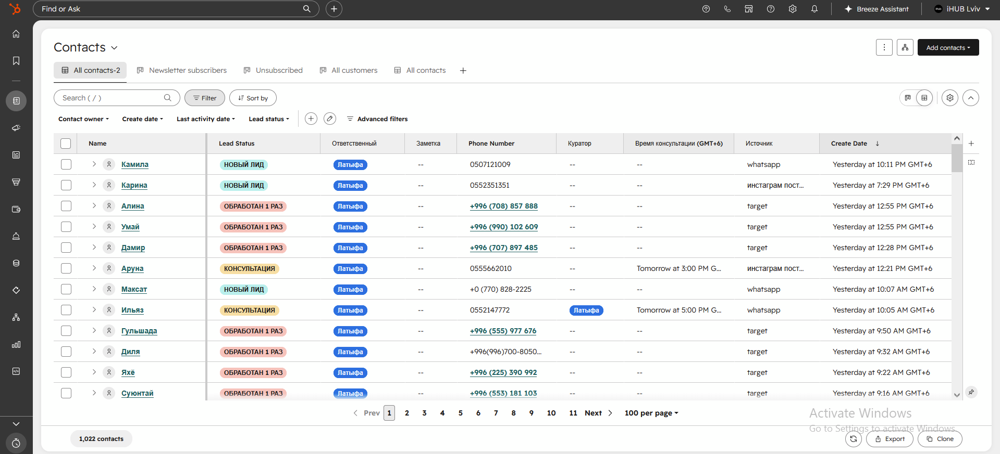

1
CRM HubSpot
База всех лидов и центральная система компании — ей пользуются и маркетинг, и продажи. Здесь хранится статус лида, источник, контактные данные и вся история работы с ним. Без этого не существует ни учёта лидов, ни сквозной аналитики: любая цифра о том, откуда пришёл клиент, в итоге считается отсюда.
HubSpot гибкий: можно добавлять свои колонки и статусы, выгружать контакты и связывать его с большинством сервисов. Это CRM №1 в Европе и США, поэтому интеграция находится почти под любую задачу.

О чём помнить
Каждый месяц нужно продливать подписку, иначе новые контакты не будут создаваться